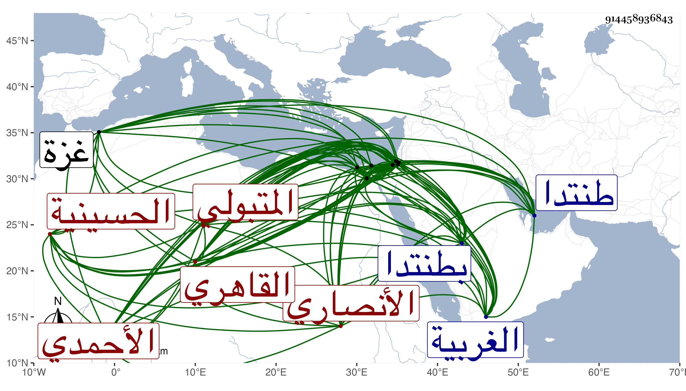

0902Sakhawi.DawLamic.ITO20230111-ara1.EIS1600.914458936843
Biography ID: 914458936843
إبراهيم بن علي بن عمر برهان الدين الأنصاري المتبولي ثم القاهري الأحمدي أحد المعتقدين قدم من بلده متبول من الغربية إلى طنتدا فأقام بضريحها مدة ثم تحول إلى القاهرة ونزل بظاهر الحسينية فكان يدير بها مزرعة ويباشر بنفسه العمل فيها من عزق وتحويل وغير ذلك من مصالحها وكان يجتمع إذ ذاك بالشيخ إبراهيم الغنام ونزل بزاوية هناك بدرب التتر تعرف بالشيخ رستم وكان فيما بلغني يتردد إليه بها المقرئ عبد الغني الهيثمي والزين عبادة بل كان ابتداء اختفائه حين طلب للقضاء عنده فيها ثم قطن زاوية غيرها بالقرب من درب السباع وصار الفقراء يردون عليه فيها ويقوم بكلفتهم من زرعه وغيره فاشتهر أمره وتزايد خبره وحج غير مرة وانتقل لبركة الحاج وأنشأ هناك زاوية كبيرة للجمعة والجماعات وبستانا متسعا وسبيلا على الطريق هائلا عم الانتفاع به سيما في أيام الحج وكذا أنشأ جامعا كبيرا بطنتدا وبرجا بدمياط وأماكن غير ذلك وكثرت أتباعه بحيث صار يخبز لهم كل يوم زيادة على أردب وربما بلغ ثلاثة أرادب سوى عليق البهائم التي برسم مزدرعاته ونحوها وهو فيما بلغني ثمانية أرادب وهرع الأكابر فضلا عمن دونهم لزيارته والتبرك به ونسب إليه جماعته من الكرامات الكثير واستفيض بينهم أنه لم يجب عليه غسل قط لا من جماع فإنه لم يتزوج ولا احتلام بل كان فيما قيل يذكر ذلك عن نفسه ويقول أنه أخذ عن الشيخ يوسف البرلسي الأحمدي وانتفع بصحبته وأنه فتح عليه في سطح جامع الظاهر لأنه أقام فيه مدة وتزاحم الناس عليه في الشفاعات وكان يرفدهم برسائله بل ربما توجه هو بنفسه في المهم منها كل ذلك مع أميته ومداومته على الإهداء لكثير من الأمراء ونحوهم من فاكهة بستانه ونحوها والناس فيه فريقان وكنت ممن زرته وملت مع محبيه بل بلغني عن العز الحنبلي أنه قال لا شك في صلاحه ووددت لو كان ثم آخر مثله ولو لم يكن إلا جمعه الجم الغفير على الطعام بل قيل أنه ذكر ما يؤذن بولاية البدر السعدي من بعده وأنه قيل له عن الخطيب فذكر ما يؤذن أنه لا يصلح لصالحة وعن نور الدين الشيشيني وابن جناق فذكر ما يلمح بموتهما قبله وأكثر ما أنكر عليه اختلاط المردان من أتباعهم بغيرهم سيما وكان البرهان العجلوني يتوجه للإقامة هناك برسم إقراء الطلبة مع ذكر مجيئه عنه في ذلك مقاصد صالحة والله أعلم بهذا كله . مات وقد توجه لزيارة القدس والخليل بعد توعكه مدة بمكان بين غزة والرملة يقال له سدود بالقرب من المقام المنسوب للسيد سليمان في ليلة الاثنين ثامن عشر ربيع الأول سنة سبع وسبعين ودفن هناك وسنه ظنا يزيد على الثمانين رحمه الله وإيانا .
